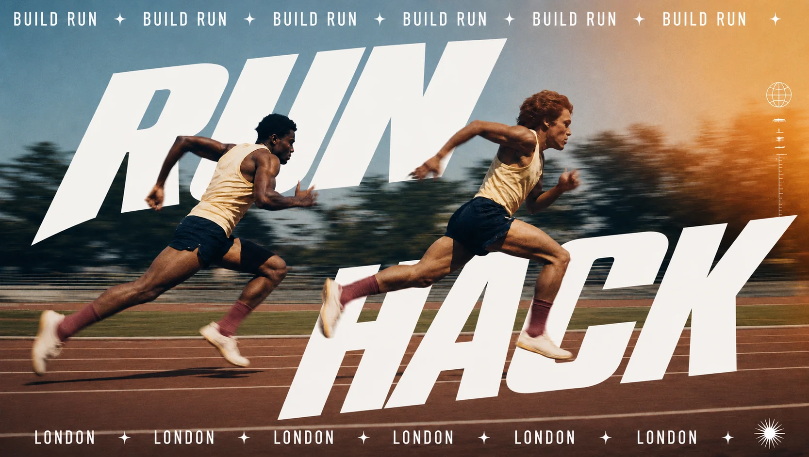
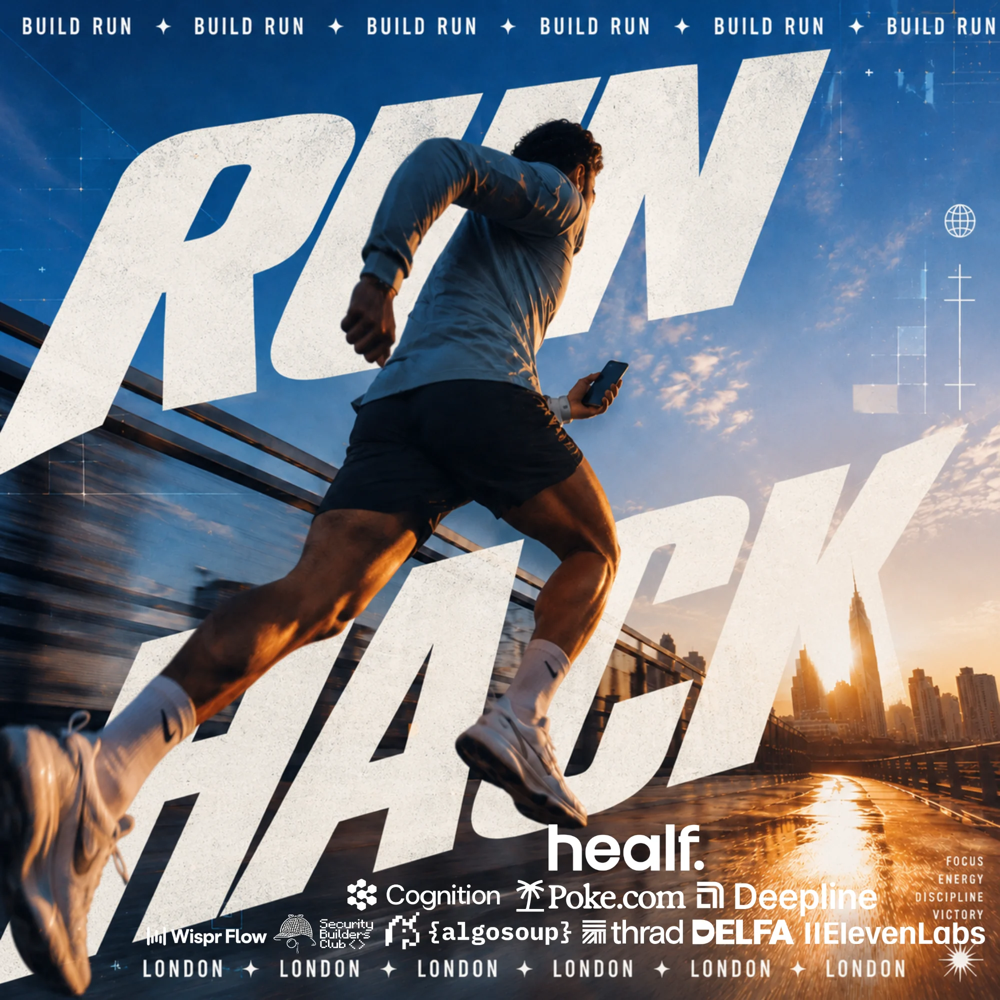

The rule
You run.
You build.
Teams of three or four ship a real AI product in a single day, and only the teammate out on the loop can touch it. Voice in from a phone, cloud agents doing the work, output live on the screens at home base. Loud music, sore legs, and something real by sundown.
-
01
While you run
Only you can build. Hands free from a phone. Voice in, agents out.
-
02
When you stop
The agents pause. Nothing moves until the next runner is out there.
-
03
How you win
What you built × how far you ran. Neither one alone is enough.
- 100
- crazy ones
- 8
- hour race
- 3/4
- per team
- 1
- day, one loop
Pace rule: slower than 7'00"/km isn’t running. Walking counts as stopping.
The day
One day.
One loop.
- 08:30 Doors Show up with trainers and a laptop. 01
- 09:00 Teams Find your people. Builders and runners, three or four deep. 02
- 10:00 Wire up One hour to connect cloud agents to every phone. 03
- 11:00 The race Only the runner builds, live on the big screens. 04
- 19:00 Ceremony Demos, judging, prizes. Two scores decide it. 05

01
London
02
San Francisco
Applications opening soon
100 places. The rule is the filter. Only the crazy ones apply.